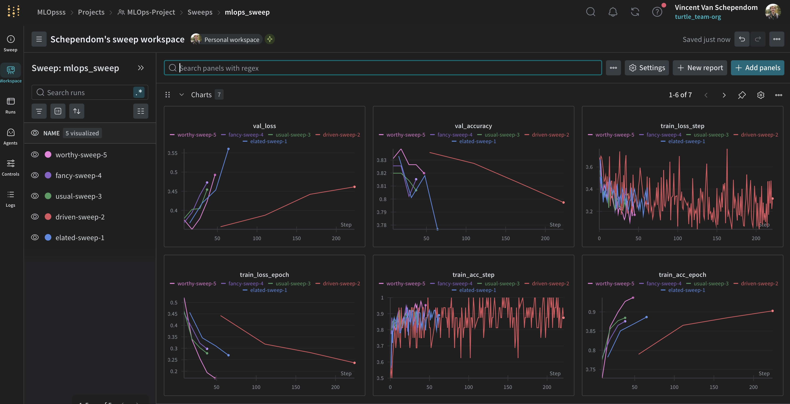
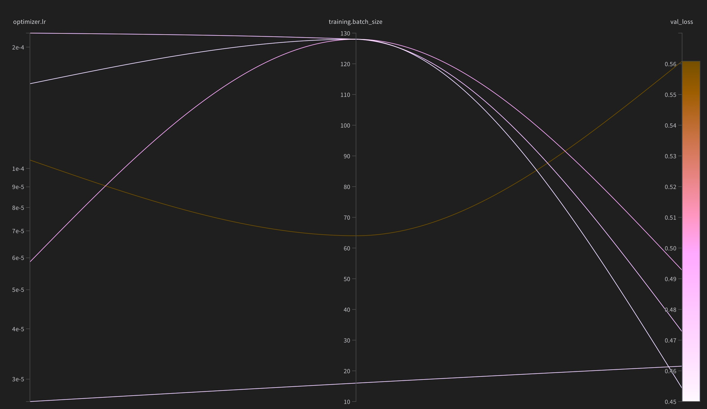
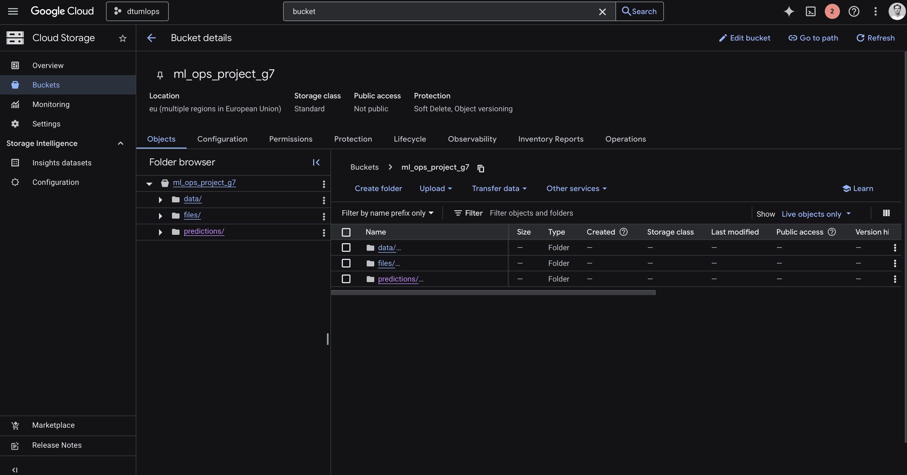
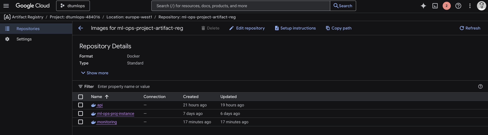
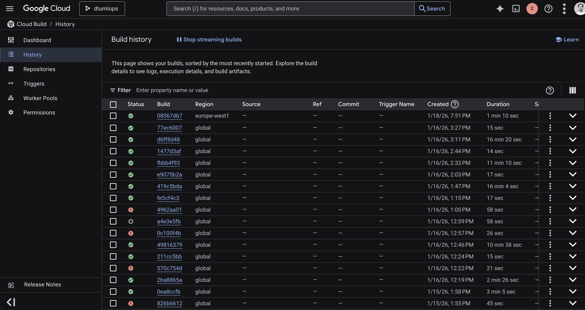
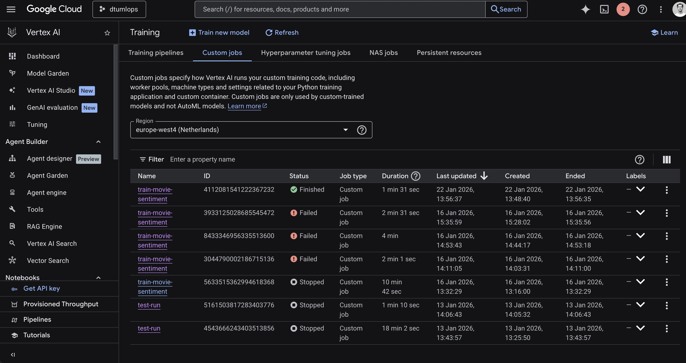
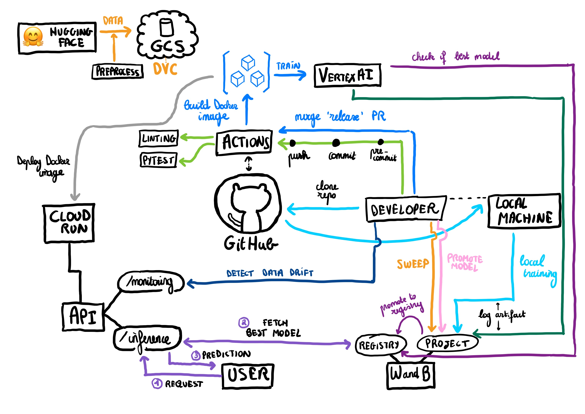

{kind=link}

Operations
This is the report template for the exam. Please only remove the text formatted as with three dashes in front and behind like:
--- question 1 fill here ---
Where you instead should add your answers. Any other changes may have unwanted consequences when your report is
auto-generated at the end of the course. For questions where you are asked to include images, start by adding the image
to the figures subfolder (please only use .png, .jpg or .jpeg) and then add the following code in your answer:

In addition to this markdown file, we also provide the report.py script that provides two utility functions:
Running:
bash
python report.py html
Will generate a .html page of your report. After the deadline for answering this template, we will auto-scrape
everything in this reports folder and then use this utility to generate a .html page that will be your serve
as your final hand-in.
Running
bash
python report.py check
Will check your answers in this template against the constraints listed for each question e.g. is your answer too short, too long, or have you included an image when asked. For both functions to work you mustn't rename anything. The script has two dependencies that can be installed with
bash
pip install typer markdown
or
bash
uv add typer markdown
The checklist is exhaustive which means that it includes everything that you could do on the project included in the curriculum in this course. Therefore, we do not expect at all that you have checked all boxes at the end of the project. The parenthesis at the end indicates what module the bullet point is related to. Please be honest in your answers, we will check the repositories and the code to verify your answers.
data.py file such that it downloads whatever data you need and preprocesses it (if necessary) (M6)model.py and a training procedure to train.py and get that running (M6)requirements.txt/requirements_dev.txt files or keeping your
pyproject.toml/uv.lock up-to-date with whatever dependencies that you are using (M2+M6)pep8) while doing the project (M7)Enter the group number you signed up on
Answer:
Group 7
Enter the study number for each member in the group
Example:
sXXXXXX, sXXXXXX, sXXXXXX
Answer:
s214631, s204078, s202186, s251739
Did you end up using any open-source frameworks/packages not covered in the course during your project? If so > which did you use and how did they help you complete the project?
Recommended answer length: 0-200 words.
Example: We used the third-party framework ... in our project. We used functionality ... and functionality ... from the > package to do ... and ... in our project.
Answer:
We did Transfer Learning by using the Hugging Face ecosystem to fine-tune a pre-trained DistilBERT model for (Rotten Tomatoes movie) sentiment classification. Specifically, transformers allowed us to load the pre-trained distilbert-base-uncased weights (trained on a massive corpus) and adapt them to our specific task using AutoModelForSequenceClassification. This approach meant we started with a model that already "understood" language, rather than training from scratch. We used datasets to fetch the Rotten Tomatoes dataset from Hugging Face and PyTorch Lightning for the implementation of the SentimentClassifier model, the RottenTomatoesDataModule and training/evaluation logic. These tools combined gave us a high-quality NLP baseline with minimal boilerplate, allowing us to focus on the MLOps pipeline.
In the following section we are interested in learning more about you local development environment. This includes how you managed dependencies, the structure of your code and how you managed code quality.
Explain how you managed dependencies in your project? Explain the process a new team member would have to go > through to get an exact copy of your environment.
Recommended answer length: 100-200 words
Example: We used ... for managing our dependencies. The list of dependencies was auto-generated using ... . To get a > complete copy of our development environment, one would have to run the following commands
Answer:
We managed dependencies using uv, with pyproject.toml as the source of declared dependencies and a committed lock file (uv.lock) to make installs reproducible across machines. When we needed to add or update a package, we used uv add <package>, which updates pyproject.toml and refreshes the lock file with resolved, pinned versions. We made sure to keep track of our normal dependencies and development dependencies, by adding a dependency group called 'dev'. To add packages to this group, we used uv add <package> --group dev.
For a new team member to get an exact copy of the environment, they would clone the repository and run uv sync --dev. This creates/updates the local virtual environment and installs the exact dependency versions specified in uv.lock (instead of re-resolving), including everything in the development dependency group. After that, project commands are run through uv (e.g., uv run ...) to ensure execution happens inside the locked environment. When simply executing the code, it's sufficient to just uv sync.
We expect that you initialized your project using the cookiecutter template. Explain the overall structure of your > code. What did you fill out? Did you deviate from the template in some way?
Recommended answer length: 100-200 words
Example: From the cookiecutter template we have filled out the ... , ... and ... folder. We have removed the ... folder > because we did not use any ... in our project. We have added an ... folder that contains ... for running our > experiments.
Answer:
We initialized the repository from the DTU_ml-ops-template cookiecutter and kept the overall structure. The core code lives in a src/ “src-layout” Python package (src/ml_ops_project/) containing our pipeline entry points and modules (data module, model definition, training and evaluation scripts). We filled out tests/ with unit tests for the main components, and used configs/ for Hydra configuration to make training/evaluation runs reproducible and parameterized. We also used the template’s supporting folders, including data/ and /models/ for datasets and saved checkpoints. A small deviation from a “clean” template is that we keep experiment artifacts produced by the tooling (e.g., outputs/, hydra_logs/, and wandb/ run logs) in the repo during development to make runs easy to inspect and compare.
Did you implement any rules for code quality and format? What about typing and documentation? Additionally, > explain with your own words why these concepts matters in larger projects.
Recommended answer length: 100-200 words.
Example: We used ... for linting and ... for formatting. We also used ... for typing and ... for documentation. These > concepts are important in larger projects because ... . For example, typing ...
Answer:
We used ruff for both linting and formatting, ensuring code was consistent and met style standards automatically. For typing, we adopted ty to enforce static type checking across our codebase. These concepts are important in larger projects because they help catch errors early and make the codebase more maintainable. For example, type checking with ty helps identify type-related errors before running the code, while linting and formatting tools keep contributions clean and readable, making collaboration easier.
The corresponding ruff and ty VS Code extensions really helped to catch these errors early on such that we didn't had to only rely on pre-commit.
Talking about pre-commit, we used pre-commit.ci to automatically run pre-commit hooks on every push to GitHub. When fixable errors are detected, pre-commit.ci will automatically fix them and commit them to the branch.
In the following section we are interested in how version control was used in your project during development to corporate and increase the quality of your code.
How many tests did you implement and what are they testing in your code?
Recommended answer length: 50-100 words.
Example: In total we have implemented X tests. Primarily we are testing ... and ... as these the most critical parts of our > application but also ... .
Answer:
In total we have implemented 19 unit tests (20 test cases including parametrization). The tests cover our full pipeline: the RottenTomatoesDataModule (dataset splits exist, dataloader batch shapes/dtypes, padding consistency, and binary labels), the SentimentClassifier (forward-pass logits/loss, train/val/test steps, and optimizer construction), training orchestration (that train() calls fit()/test() and handles WandB enabled/disabled and sweep vs non-sweep setup), and evaluation logic (selecting an explicit checkpoint vs the newest checkpoint in a directory and raising clear errors when missing).
What is the total code coverage (in percentage) of your code? If your code had a code coverage of 100% (or close > to), would you still trust it to be error free? Explain you reasoning.
Recommended answer length: 100-200 words.
Example: The total code coverage of code is X%, which includes all our source code. We are far from 100% coverage of our ** > code and even if we were then...*
Answer:
Our total code coverage is 70.78%. This gives reasonable confidence that core paths in our data module, model, and the training/evaluation entry points execute as expected, and that key failure modes (e.g., missing checkpoints, WandB disabled/misconfigured) are handled. However, even with 100% (or near-100%) line coverage, we would not trust the system to be error free. Coverage only shows that lines were executed, not that they were exercised with the right assertions, realistic inputs, or critical edge cases. It also does not guarantee correct behavior across different environments (GPU/CPU, OS differences), external dependencies (WandB/network), or realistic data conditions (distribution shifts, unexpected text lengths, corrupted caches). For ML systems, correctness additionally depends on data quality and non-determinism. We therefore treat coverage as one signal, complemented by stronger assertions, integration tests, and manual review.
Did you workflow include using branches and pull requests? If yes, explain how. If not, explain how branches and > pull request can help improve version control.
Recommended answer length: 100-200 words.
Example: We made use of both branches and PRs in our project. In our group, each member had an branch that they worked on in > addition to the main branch. To merge code we ...
Answer:
We used branches primarily for implementing larger features that affected multiple parts of our workflow. For smaller, isolated changes, we committed directly to main. Additionally, we maintained a dedicated release branch for triggering our GCP deployment pipeline (as described in more detail in Question 11). This setup allowed us to avoid unnecessary cloud costs by only running expensive training jobs when code was explicitly pushed or merged to release. Pull requests were used when merging feature branches into main, providing an opportunity for code review and ensuring that CI checks passed before integration. This branching strategy struck a balance between overhead and safety: small fixes could land quickly, while larger changes received proper review and testing before merging.
Did you use DVC for managing data in your project? If yes, then how did it improve your project to have version > control of your data. If no, explain a case where it would be beneficial to have version control of your data.
Recommended answer length: 100-200 words.
Example: We did make use of DVC in the following way: ... . In the end it helped us in ... for controlling ... part of our > pipeline
Answer:
We used a Google Cloud Platform (GCP) bucket to store our data artifacts, specifically the preprocessed Rotten Tomatoes dataset and model checkpoints. We then used dvc (Data Version Control) to version control these files, enabling us to reliably access the correct versions of data and models across development environments and during CI/CD runs. In our cloud workflows—such as when deploying with Cloud Run—we configured the pipeline to access the GCP bucket using service account authentication (set up in GitHub Actions). The required files are automatically pulled from the bucket using dvc pull as part of the deployment or job start-up, ensuring consistency between local and cloud environments. This setup meant that data changes and model versions were tracked and reproducible, and team members could collaborate without manual data transfers or risk of mismatched datasets.
Discuss you continuous integration setup. What kind of continuous integration are you running (unittesting, > linting, etc.)? Do you test multiple operating systems, Python version etc. Do you make use of caching? Feel free > to insert a link to one of your GitHub actions workflow.
Recommended answer length: 200-300 words.
Example: We have organized our continuous integration into 3 separate files: one for doing ..., one for running ... testing > and one for running ... . In particular for our ..., we used ... .An example of a triggered workflow can be seen > here:
Answer:
Because we noticed that -- while writing the GitHub Actions workflows -- we had a lot of code duplication, we decided to create action.yaml files in .github/actions/ to abstract away the common parts of our workflows. More specifically, we created actions for the GCP setup (authentication and SDK setup) in setup-gcp/ and for setting up the Python environment (Python and uv installation + dependency installation) in setup-python/. This way, we can reuse these actions in multiple workflows.
With regards to the actual workflows themselves (which are stored in .github/workflows/), we have the following:
gcp.yaml:pytestneeds: test)GCP/cloud.dockerfile into a container imageGCP/vertex_ai_train.yaml (which uses the container image built above)linting.yaml:ruff check and ruff format.pre-commit-update.yaml:uv yet).tests.yaml:pytest with coverage, after it has pulled the necesseary files from the GCP bucket with uv run dvc pull.
We use GitHub Actions for continuous integration to automatically validate every push. The workflow primarily focuses on unit testing with pytest and code coverage, ensuring that core functionality stays stable as the codebase evolves.Our unit tests cover the main components of the ML pipeline:
train/validation/test), and that each dataloader yields batches with correct keys, shapes, and dtypes (e.g., input_ids, attention_mask, labels).train() wires together data, model, trainer, and calls fit() and test(); we also test setup_wandb() behavior (disabled, missing key, sweep vs non-sweep).We additionally keep a small WandB access check for the service account locally, but it is excluded from CI because it relies on secrets and external network access.
The CI matrix runs the same suite across Python 3.11 and 3.12 on macOS, Ubuntu, and Windows (six environments), which helps catch OS-specific issues (e.g., filesystem timestamp resolution). A successful CI run example: GitHub Actions run 21066565482.
In the following section we are interested in learning more about the experimental setup for running your code and especially the reproducibility of your experiments.
How did you configure experiments? Did you make use of config files? Explain with coding examples of how you would > run a experiment.
Recommended answer length: 50-100 words.
Example: We used a simple argparser, that worked in the following way: Python my_script.py --lr 1e-3 --batch_size 25
Answer:
We configured our experiments using Hydra which allows for a modular and hierarchical configuration system. Instead of hardcoding parameters, we use YAML files to manage model architectures, training hyperparameters, and logging. This structure makes it easy to swap different components, such as changing the optimizer from Adam to Nesterov SGD, by updating a configuration reference or using a command line override.
Reproducibility of experiments are important. Related to the last question, how did you secure that no information > is lost when running experiments and that your experiments are reproducible?
Recommended answer length: 100-200 words.
Example: We made use of config files. Whenever an experiment is run the following happens: ... . To reproduce an experiment > one would have to do ...
Answer:
We ensured experiment reproducibility by making the full run configuration and artifacts traceable and recoverable. Experiments are configured with Hydra (configs/) and we seed all RNGs at the start of training (pl.seed_everything(cfg.training.seed)), so data shuffling and training behavior are deterministic as far as the stack allows. For each run we initialize Weights & Biases with the entire resolved Hydra config (wandb.init(config=OmegaConf.to_container(cfg, resolve=True))), meaning all hyperparameters and overrides (model name, optimizer settings like lr/weight decay/betas, batch size, etc.) are stored alongside metrics and run metadata (tags/notes). We also checkpoint the best model based on validation accuracy and, when W&B is enabled, upload checkpoints as W&B Artifacts (log_model="all"), so the exact weights can be retrieved later. Finally, dependency versions are pinned via uv.lock/pyproject.toml, and our dataset is versioned with DVC (stored in a GCP bucket), so rerunning the same code + data + config reproduces the experiment.
Upload 1 to 3 screenshots that show the experiments that you have done in W&B (or another experiment tracking > service of your choice). This may include loss graphs, logged images, hyperparameter sweeps etc. You can take > inspiration from this figure. Explain what metrics you are tracking and why they are > important.
Recommended answer length: 200-300 words + 1 to 3 screenshots.
Example: As seen in the first image when have tracked ... and ... which both inform us about ... in our experiments. > As seen in the second image we are also tracking ... and ...
Answer:
In our training script (src/ml_ops_project/train.py) we use a WandbLogger to track the key metrics emitted by the Lightning model during training and evaluation (defined in src/ml_ops_project/models.py). We log loss and accuracy for training, validation, and test so we can monitor optimization progress and generalization.
In the screenshot below, training loss decreases while training accuracy increases, which indicates the model is learning the sentiment classification task. The validation curves provide a signal of generalization: validation loss rises and validation accuracy drops toward the end, suggesting that overfitting might be happening. Finally, the single test loss/accuracy points summarize the final performance on held-out data using the best checkpoint selected during training.
We also used W&B Sweeps for hyperparameter optimization. The sweep dashboard below shows five runs exploring different configurations, tracking validation loss, validation accuracy, and training metrics over training steps. We can see that different hyperparameter combinations lead to varying convergence behavior—some runs achieve lower validation loss more quickly, while others plateau or show signs of overfitting.
The parallel coordinates plot (right) visualizes how our swept hyperparameters—learning rate (optimizer.lr) and batch size (training.batch_size)—affect validation loss. Lower validation loss (lighter colors) appears to correlate with learning rates around 1e-4 to 2e-4 and batch sizes of 128. This visualization helped us identify promising hyperparameter regions which could be used to select the best hyperparameters for the final model.
 
Docker is an important tool for creating containerized applications. Explain how you used docker in your > experiments/project? Include how you would run your docker images and include a link to one of your docker files.
Recommended answer length: 100-200 words.
Example: For our project we developed several images: one for training, inference and deployment. For example to run the > training docker image:
docker run trainer:latest lr=1e-3 batch_size=64. Link to docker file:Answer:
We used Docker to make our ML pipeline reproducible and deployable across laptops and GCP. We created separate images for training (dockerfiles/train.dockerfile) and evaluation (dockerfiles/evaluate.dockerfile) using an uv-based Python image and uv.lock, so the container captures OS-level dependencies and a fully pinned Python environment. This makes our experiments run the same way locally, in CI, and in Cloud Build.
For training we build and run the container and pass Hydra overrides at runtime:
docker build -f dockerfiles/train.dockerfile . -t train:latest
docker run --rm -v "$(pwd)/models:/models" -e WANDB_API_KEY=$WANDB_API_KEY train:latest training.max_epochs=3 training.batch_size=32 optimizer.lr=1e-3
Mounting models/ lets checkpoints persist on the host.
For deployment we also prepared lightweight API/monitoring images (dockerfiles/api.dockerfile, dockerfiles/monitoring.dockerfile) that start a FastAPI service on port 8080 (Cloud Run compatible).
Link to Dockerfile: dockerfiles/train.dockerfile
When running into bugs while trying to run your experiments, how did you perform debugging? Additionally, did you > try to profile your code or do you think it is already perfect?
Recommended answer length: 100-200 words.
Example: Debugging method was dependent on group member. Some just used ... and others used ... . We did a single profiling > run of our main code at some point that showed ...
Answer:
Our debugging method was multi-layered beginning with unit testing. We used pytest to verify our data loading and model outputs before running full training cycles. When runtime errors occurred, we used the interactive debugger in VS Code within our DevContainer environment to step through the code and inspect this. We also heavily relied on Hydra’s logging and the multirun flag to identify if bugs were tied to specific hyperparameter configurations.
Regarding profiling, we did not find it necessary to implement custom profiling tools because we used PyTorch Lightning. The framework provides built in profilers that automatically track training bottlenecks and "time per step" metrics. Since our current model based on DistilBERT is already optimized for efficiency, and our resource utilization remained within acceptable bounds on GCP, we prioritized code correctness and reproducibility over further manual performance tuning.
In the following section we would like to know more about your experience when developing in the cloud.
List all the GCP services that you made use of in your project and shortly explain what each service does?
Recommended answer length: 50-200 words.
Example: We used the following two services: Engine and Bucket. Engine is used for... and Bucket is used for...
Answer:
The backbone of GCP is the Compute engine. Explained how you made use of this service and what type of VMs > you used?
Recommended answer length: 100-200 words.
Example: We used the compute engine to run our ... . We used instances with the following hardware: ... and we started the > using a custom container: ...
Answer:
We did not manually create VMs to connect to them via SSH, clone the repo, set up Python, dependencies, etc. Instead, we indirectly utilized the Compute Engine infrastructure through Vertex AI and Cloud Run:
1. Vertex AI Training: When we submit a custom training job, Vertex AI provisions n1-standard-4 instances with NVIDIA T4 GPUs behind the scenes to execute our containerized training script.
2. Cloud Run: Our API runs on serverless container instances which are also powered by the underlying Compute Engine infrastructure, scaling automatically based on request traffic.
Using Vertex AI and Cloud Run reduces the overhead of manually managing VMs.
Insert 1-2 images of your GCP bucket, such that we can see what data you have stored in it. > You can take inspiration from this figure.
Answer:
Our GCS bucket ml_ops_project_g7 is hosted in the EU (multiple regions) with Standard storage class. It contains three main folders: data/ for training datasets, files/ for model artifacts and checkpoints, and predictions/ for storing inference outputs from our API.

Upload 1-2 images of your GCP artifact registry, such that we can see the different docker images that you have > stored. You can take inspiration from this figure.
Answer:
Our Artifact Registry (ml-ops-project-artifact-reg) in europe-west1 stores three 'groups' of Docker images, each with multiple versions:
- api: The Docker image for our production FastAPI inference service.
- monitoring: The Docker image for our drift detection service.
- ml-ops-proj-instance: The environment image used for running Vertex AI training jobs.
The ml-ops-proj-instance image is the one built and pushed automatically via Cloud Build as part of our release CI/CD pipeline (to ensure training jobs always use the latest code/dependencies). The api and monitoring images were built manually via the gcloud CLI (e.g. gcloud builds submit) during the deployment phase.

Upload 1-2 images of your GCP cloud build history, so we can see the history of the images that have been build in > your project. You can take inspiration from this figure.
Answer:
Our Cloud Build history (see figure below) shows numerous builds executed during development. Most builds completed successfully (green checkmarks), with a few failures (red icons) during debugging. Some builds are triggerd by the continuous release GitHub workflow (where the the training image is built to be used by Vertex AI), while other builds were submitted manually for deployment to the /predict and /monitoring API endpoints on Cloud Run. Build durations vary from quick ~15 second pushes to longer ~16 minute builds for full Docker image creation. Builds run in both europe-west1 and global regions depending on the automatic/manual trigger and specific configurations.

Did you manage to train your model in the cloud using either the Engine or Vertex AI? If yes, explain how you did > it. If not, describe why.
Recommended answer length: 100-200 words.
Example: We managed to train our model in the cloud using the Engine. We did this by ... . The reason we choose the Engine > was because ...
Answer:
We successfully trained our model in the cloud using Vertex AI.
We automated this process with a CI/CD pipeline using GitHub Actions (specified in .github/workflows/gcp.yaml). When code is merged into the release branch, our workflow:
1. Builds a Docker image using dockerfiles/cloud.dockerfile (as defined in GCP/cloudbuild.yaml), which captures our exact Python environment.
2. Pushes this image to the Google Artifact Registry.
3. Submits a Vertex AI Custom Job using the configuration in GCP/vertex_ai_train.yaml.
The training job runs our src/ml_ops_project/train.py script on a managed worker node (using n1-standard-4 with NVIDIA_TESLA_T4 GPUs as defined in our configs/GCP/config_gpu.yaml config file). It pulls data from our GCS bucket (via DVC) and logs all metrics and artifacts to Weights & Biases, enabling us to monitor cloud training progress in real-time. If the model training leads to a better model than the previous one, the new model is promoted to the WandB model registry with the alias inference.
We chose Vertex AI over the raw Compute Engine because it is a managed service that automatically handles infrastructure provisioning, driver installation, and -- crucially -- shutdown of expensive GPU resources after the job completes, which avoids accidental costs and waste of our limited GCP credits.

Note that in the training job above, we limited the number of epochs to max_epochs=1 such that the training completed in less than 2 minutes. This is only for the purpose of this report and should not be used in production, of course.
Did you manage to write an API for your model? If yes, explain how you did it and if you did anything special. If > not, explain how you would do it.
Recommended answer length: 100-200 words.
Example: We did manage to write an API for our model. We used FastAPI to do this. We did this by ... . We also added ... > to the API to make it more ...
Answer:
--- question 23 fill here ---
Did you manage to deploy your API, either in locally or cloud? If not, describe why. If yes, describe how and > preferably how you invoke your deployed service?
Recommended answer length: 100-200 words.
Example: For deployment we wrapped our model into application using ... . We first tried locally serving the model, which > worked. Afterwards we deployed it in the cloud, using ... . To invoke the service an user would call >
curl -X POST -F "file=@file.json"<weburl>Answer:
--- question 24 fill here ---
Did you perform any unit testing and load testing of your API? If yes, explain how you did it and what results for > the load testing did you get. If not, explain how you would do it.
Recommended answer length: 100-200 words.
Example: For unit testing we used ... and for load testing we used ... . The results of the load testing showed that ... > before the service crashed.
Answer:
We performed API tests using pytest and FastAPI’s TestClient in tests/integrationtests/test_apis.py. The tests stub the model/tokenizer and the GCP upload call so the handlers run quickly and deterministically. We verify the happy-path inference response (status 200 with a valid sentiment), validate request schema errors (missing statement returns 422), and check that the /metrics endpoint exposes the prediction_requests counter. These integration-style unit tests were run locally with uv run pytest tests/integrationtests/test_apis.py, and all three tests passed.
For load testing, we used locust to simulate the user traffic for both our local API and our deployed Cloud Run endpoint. We defined a locustfile.py with two tasks, a get_root task and a weighted post_inference task that sends JSON payloads containing a statement key to the /inference endpoint.
Our results from the Cloud Run showed a stable performance with 0.5 requests per second per user and a failure rate of approximately 21%.
Did you manage to implement monitoring of your deployed model? If yes, explain how it works. If not, explain how > monitoring would help the longevity of your application.
Recommended answer length: 100-200 words.
Example: We did not manage to implement monitoring. We would like to have monitoring implemented such that over time we could > measure ... and ... that would inform us about this ... behaviour of our application.
Answer:
--- question 26 fill here ---
In the following section we would like you to think about the general structure of your project.
How many credits did you end up using during the project and what service was most expensive? In general what do > you think about working in the cloud?
Recommended answer length: 100-200 words.
Example: Group member 1 used ..., Group member 2 used ..., in total ... credits was spend during development. The service > costing the most was ... due to ... . Working in the cloud was ...
Answer:
--- question 27 fill here ---
Did you implement anything extra in your project that is not covered by other questions? Maybe you implemented > a frontend for your API, use extra version control features, a drift detection service, a kubernetes cluster etc. > If yes, explain what you did and why.
Recommended answer length: 0-200 words.
Example: We implemented a frontend for our API. We did this because we wanted to show the user ... . The frontend was > implemented using ...
Answer:
We implemented GCP alert systems that notify us when any part of our cloud application fails. These alerts monitor Cloud Run service health, build failures in Cloud Build, and resource utilization. This proactive monitoring ensures we are immediately aware of issues in production rather than discovering them after users complain.
We also built a drift detection service deployed as a separate Cloud Run endpoint (/monitoring). This service compares the distribution of incoming inference requests against our training data to detect data drift. When the input distribution shifts significantly from what the model was trained on, it signals that model performance may degrade and retraining might be needed. This closes the MLOps feedback loop by connecting production data back to model development.
Include a figure that describes the overall architecture of your system and what services that you make use of. > You can take inspiration from this figure. Additionally, in your own words, explain the > overall steps in figure.
Recommended answer length: 200-400 words
Example:
The starting point of the diagram is our local setup, where we integrated ... and ... and ... into our code. > Whenever we commit code and push to GitHub, it auto triggers ... and ... . From there the diagram shows ...
Answer:

The diagram illustrates our end-to-end MLOps pipeline. Data ingestion starts with the Hugging Face dataset, which is preprocessed and stored in GCS with DVC handling version control.
Development begins on the local machine where developers clone the repository from GitHub. Pre-commit hooks enforce code quality before each commit. When code is pushed, GitHub Actions triggers our CI/CD pipeline, running linting and pytest to validate changes.
For training, merging a PR to the release branch triggers Cloud Build to create a Docker image and push it to Artifact Registry. This image is then used by Vertex AI to run training jobs in the cloud. Developers can also run local training and hyperparameter sweeps. All training runs log metrics and artifacts to the W&B Project, enabling experiment tracking and comparison.
Model management is handled through W&B Registry. After training, the best model is promoted to the registry based on validation metrics. The system checks if a newly trained model outperforms the current best before promotion.
Deployment uses Cloud Run to host our FastAPI application with two main endpoints: /inference for predictions and /monitoring for data drift detection. When a user sends a request to the /inference endpoint, the API fetches the best model from the W&B Registry and returns a sentiment prediction. The /monitoring endpoint allows us to detect data drift by comparing incoming data distributions against the training data.
This architecture enables continuous integration, automated training, experiment tracking, and production deployment while maintaining reproducibility through DVC and comprehensive monitoring through W&B and our drift detection API.
The diagram below illustrates our end-to-end MLOps pipeline, bridging local development with cloud execution on GCP.
1. Data Ingestion: We fetch the Rotten Tomatoes dataset from Hugging Face, preprocess it, and store the versioned artifacts in a GCS Bucket using DVC.
2. Local Development: Developers clone the repo from GitHub. They can run local training (logging to WandB Projects) or run hyperparameter Sweeps.
3. CI/CD Pipeline:
- On every push, GitHub Actions triggers linting (ruff) and unit tests (pytest).
- On a merge to the release branch, Actions builds the Docker image and pushes it to Artifact Registry.
- It then triggers a Vertex AI training job.
4. Training & Evaluation: Vertex AI pulls the data (via DVC/GCS) and the Docker image. It trains the model, logging metrics and artifacts to WandB.
5. Model Registry & Promotion: If the trained model is the best one, it is promoted to the WandB Model Registry.
6. Deployment: The pipeline triggers a Cloud Run update. The API service pulls the latest "production" model artifact from WandB during startup.
7. Inference & Monitoring: Users send requests to the API. Predictions and feedback are logged for Drift Detection, closing the feedback loop.
Discuss the overall struggles of the project. Where did you spend most time and what did you do to overcome these > challenges?
Recommended answer length: 200-400 words.
Example: The biggest challenges in the project was using ... tool to do ... . The reason for this was ...
Answer:
One of the biggest challenges was deploying our API to Google Cloud Run. Understanding the error messages from GCP proved difficult—they were often cryptic and required significant debugging to interpret. Issues ranged from authentication problems with service accounts to container configuration mismatches. We overcame this by carefully reading the Cloud Build logs, testing containers locally before deploying, and iteratively fixing issues one at a time until the API was fully operational.
Writing comprehensive tests to achieve sufficient code coverage was another time-consuming task. It wasn't just about writing tests, but writing the right tests that meaningfully validated our code paths. We had to balance unit tests for individual functions with integration tests for the API endpoints. Getting the coverage percentage up required identifying untested edge cases and ensuring our test data was representative of real-world inputs.
Getting continuous integration to pass consistently required substantial bug fixing. Our GitHub Actions workflows would fail for various reasons: dependency conflicts between environments, flaky tests that passed locally but failed in CI, and authentication issues when accessing GCP resources from the CI environment. We addressed these by adding proper caching, ensuring environment parity between local and CI setups, and using our custom GitHub Actions for consistent Python and GCP setup across workflows.
Additionally, integrating multiple services—DVC, W&B, GCP, and GitHub Actions—meant dealing with authentication and configuration across all of them. Each service had its own way of handling secrets and credentials, and making them work together seamlessly took considerable effort. We resolved this by centralizing our GCP authentication through reusable GitHub Actions and carefully managing environment variables and secrets.
State the individual contributions of each team member. This is required information from DTU, because we need to > make sure all members contributed actively to the project. Additionally, state if/how you have used generative AI > tools in your project.
Recommended answer length: 50-300 words.
Example: Student sXXXXXX was in charge of developing of setting up the initial cookie cutter project and developing of the > docker containers for training our applications. > Student sXXXXXX was in charge of training our models in the cloud and deploying them afterwards. > All members contributed to code by... > We have used ChatGPT to help debug our code. Additionally, we used GitHub Copilot to help write some of our code. Answer:
Student s204078 wrote tests and created GitHub Actions workflows. Responsible for code structure including comments, linting setup, and contributed to report questions.
Student s202186 mainly worked on visualization, tests, load testing with Locust, and contributed to report questions.
Student s214631 worked on the API and deployment infrastructure. Set up uv for dependency management, implemented tasks and Hydra configuration, built Dockerfiles, created the FastAPI application, handled cloud deployment, and configured alerts.
Student s251739 handled most of the Google Cloud Platform setup including CI with GitHub Actions, training pipeline and model implementation with PyTorch Lightning, monitoring for data drift, and containerization in general.
All members contributed to code reviews, debugging, and documentation. We used GitHub Copilot and ChatGPT/Claude to assist with debugging, writing boilerplate code, and answering some questions.
{kind=link}
{kind=link}
{kind=link}
{kind=link}